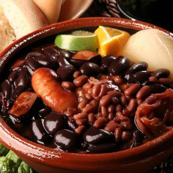

Milanesa a la Napolitana
Deliciosa milanesa empanada, cubierta con salsa de tomate y queso fundido, un plato típico argentino.
Ver receta
Sajta de Pollo
Un guiso tradicional boliviano a base de pollo, papas y ají amarillo, servido con arroz o chuño.
Ver receta
